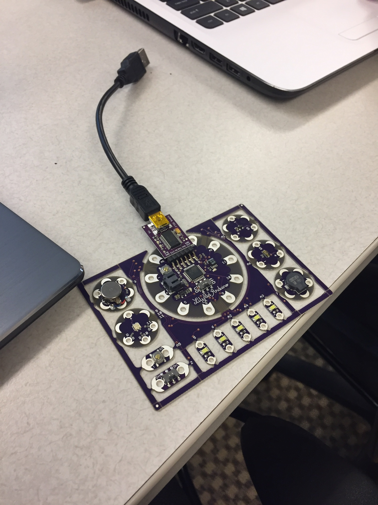

As an introduction to the amazing technologies at our fingertips, we have used LilyPad Arduino to illustrate a basic implementation of a fun project to encourage young children to explore STEM fields. Understanding the importance of encouraging younger children to consider STEM fields is critical to ensuring that there is a new generation of people ready to create new technologies.
LilyPad Arduino is an easy to use microcontroller that can be used with clothing and other interactive projects. Sone of the different components that LilyPad has include a buzzer, LED lights, and sound sensor. Using Arduino you can manipulate LED lights, create musical tunes and even make a buzzer go off. You can set input and output that uses the sensors. "Kids are more into technology these days. You always see someone on an iPad or something. This Arduino is hands on and interactive just like the things they are using anyway," says student researcher Meagan Price.
To see our video click here
With very little experience needed, it is easy to learn some of the basic principles of using Arduino. The lights and sounds are very interactive and engaging for young children. By integrating some of the things they are familiar with, such as songs and color, LilyPad Arduino has the potential to capture children's attention and get them interested in STEM fields. As Price continues, "When I was a kid I loved things that lit up. If I was a kid I would love LilyPad because it is easy to program. You get to see your results immediately." The limitations for this project were finding a musical tune with the proper tune. If you're feeling ambition you can even make your own tune!
With this LilyPad we set the sound sensor to play the intro to Eye of the Tiger and flash a certain color depending on the frequency of the note that was being played. Playing catchy tunes makes the LilyPad more engaging and there is a sense of accomplishment knowing that you did made something that is really cool.
Contact Max Girard at maxinegirard@gmail.com or Meagan Price at mprice@claflin.edu